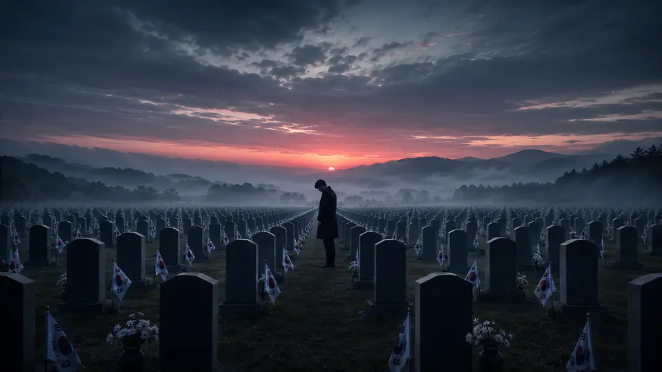
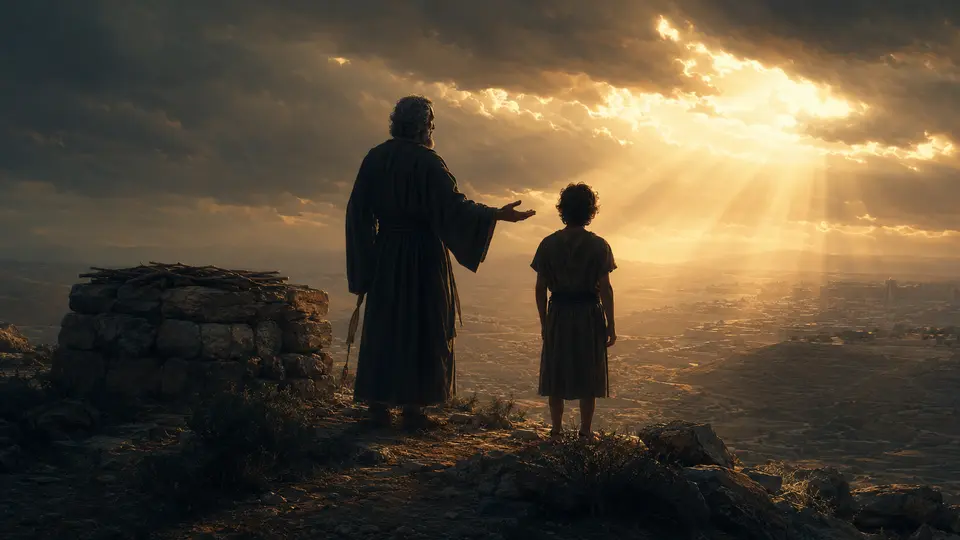

대표 콘텐츠
KF-21 보라매,
한국 전투기 시대가 열렸다
전투용 적합 판정을 받은 KF-21이 한국 항공전력과 방위산업에 어떤 변화를 여는지 살펴봅니다.
대표 영상 보기 (새 탭에서 열림)KNOWLEDGE ANATOMY
지식해부학은 세계·역사·성경·스포츠와 사회 이슈를 질문 중심으로 해부하는 쌍칼 콘텐츠 스튜디오의 대표 브랜드입니다.
쌍칼 콘텐츠 스튜디오는 지식해부학을 중심으로 세계·역사·성경·스포츠와 사회 이슈를 해부하는 콘텐츠를 제작합니다.
FACT → STRUCTURE → QUESTION
01 / FEATURED CONTENT
각 시리즈의 관점을 가장 선명하게 보여주는 대표 주제를 모았습니다.
대표 콘텐츠
전투용 적합 판정을 받은 KF-21이 한국 항공전력과 방위산업에 어떤 변화를 여는지 살펴봅니다.
대표 영상 보기 (새 탭에서 열림)
대표 콘텐츠
현충일의 1분 묵념이 무엇을 기억하고, 오늘의 우리에게 어떤 의미를 남기는지 되짚습니다.
대표 영상 보기 (새 탭에서 열림)
대표 콘텐츠
모리아 산의 시험을 통해 믿음과 순종, 그리고 내려놓음의 의미를 다시 질문합니다.
대표 영상 보기 (새 탭에서 열림)대표 콘텐츠
서류 위의 종결과 몸이 느끼는 회복이 왜 같은 날 오지 않는지 기록합니다.
대표 기록 읽기02 / ALL SERIES
세계·역사·성경·스포츠부터 경제·산재·창작까지 전체 시리즈를 살펴보세요.
국제정세 · 경제 · 지정학
사건 · 인물 · 숨은 맥락
본문 · 인물 · 인간의 선택
축구 · 야구 · 시스템
산업 · 노동 · 보상 · 회복
전쟁 · 물류 · 생존 · 세계관
03 / OUR METHOD
정보만 나열하지 않습니다. 강한 질문으로 시선을 붙잡고 사건의 구조를 보여준 뒤, 시청자가 자기 생각을 남길 수 있는 지점까지 안내합니다.
익숙한 상식을 뒤집는 한 문장으로 시작합니다.
누가, 왜, 어떤 선택을 했는지 연결합니다.
영상이 끝난 뒤에도 생각이 이어지게 만듭니다.
04 / CHANNELS
영상, 기록과 웹소설로 이어지는 쌍칼의 공식 콘텐츠 채널을 모았습니다.